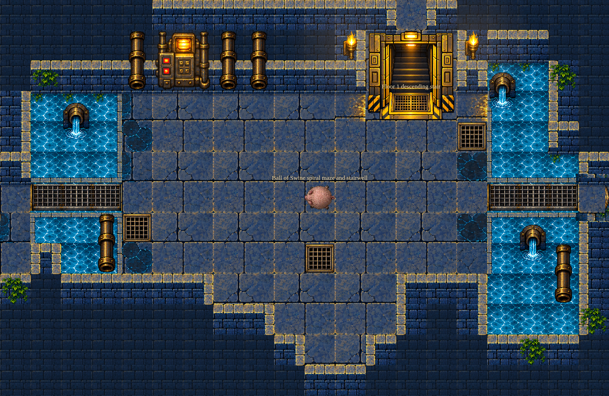
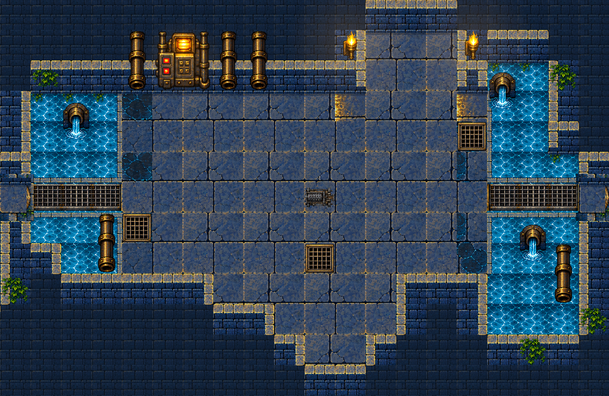
Source versus final · Baseline versus final · Stage validation · Final real traversal report
Actual published WASM state. Browser response override changes room camera framing and renderer frame timestamp only (1000 ms). External controls/toast/battle banner hidden for environment crop. No state, geometry, assets, or draw calls injected. Initial player state retained for equal comparisons.


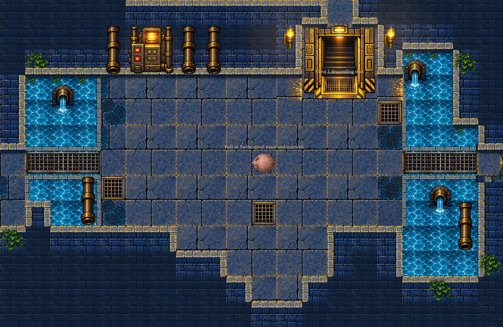
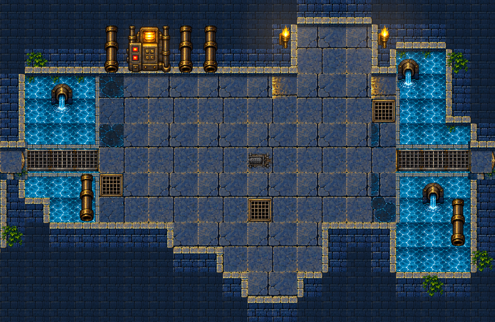
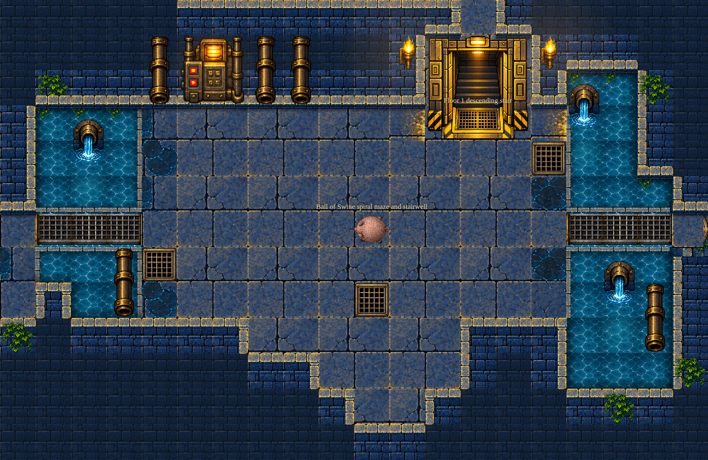
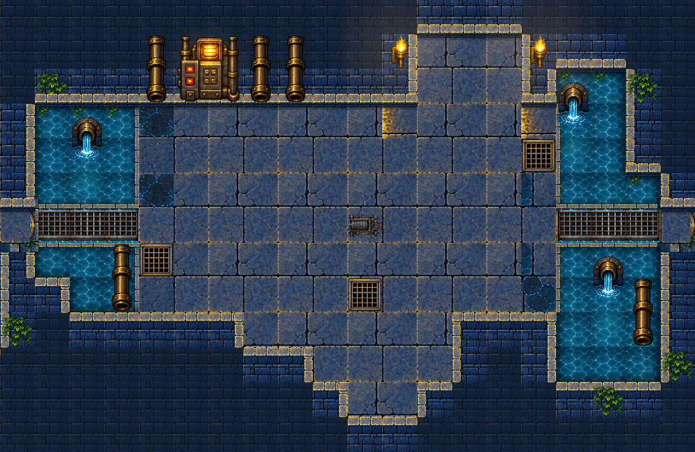
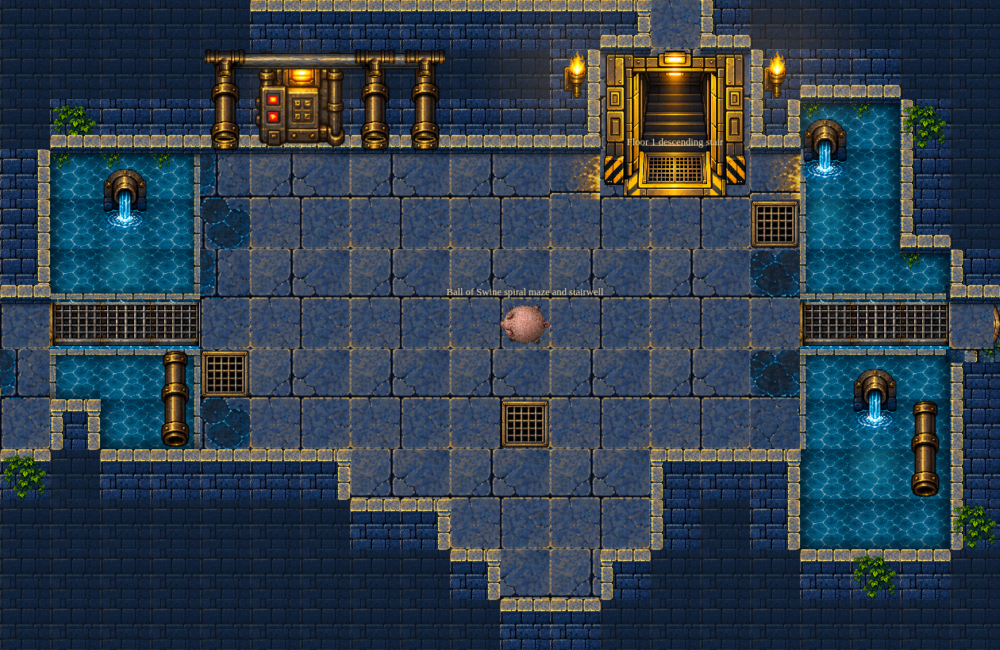
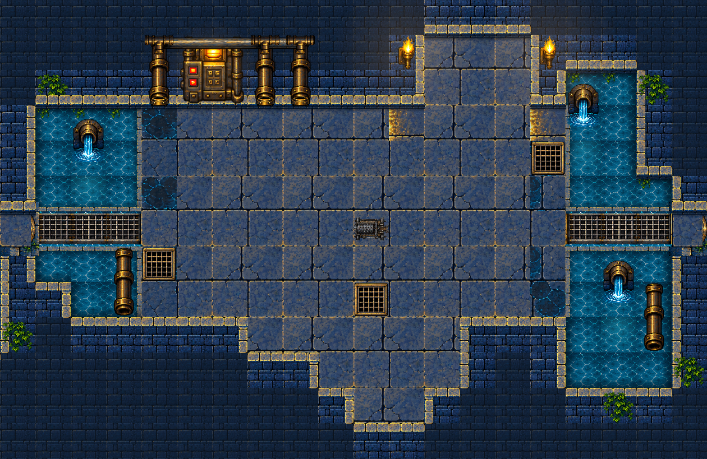
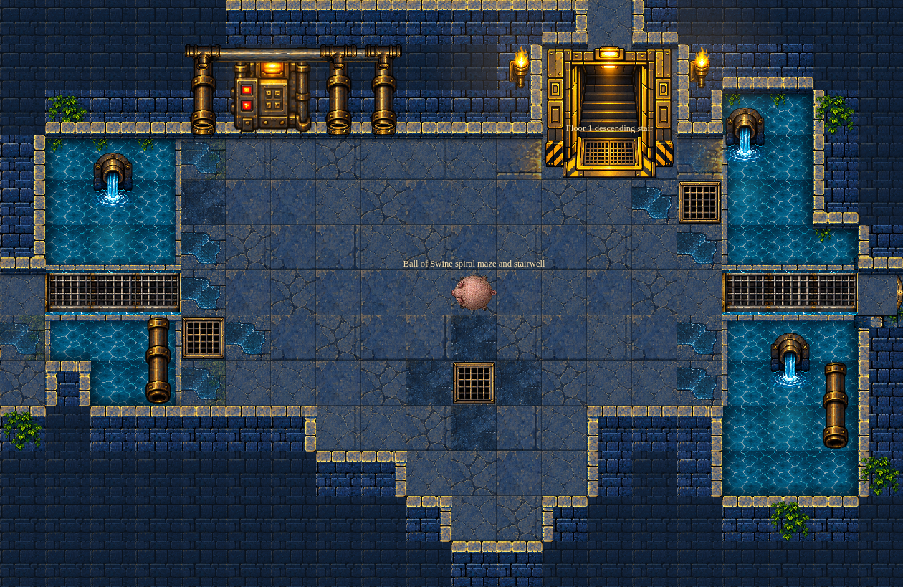
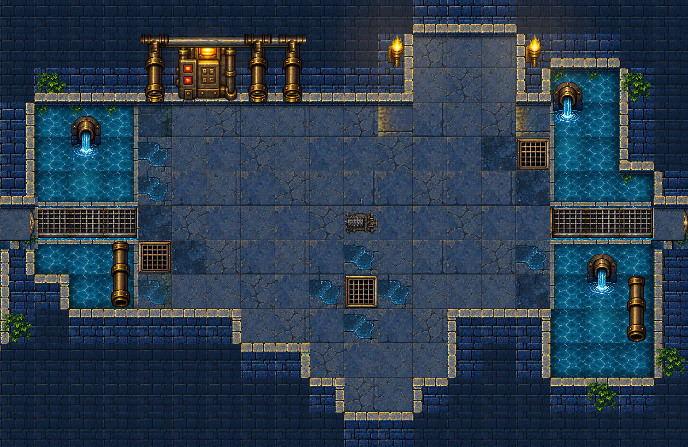
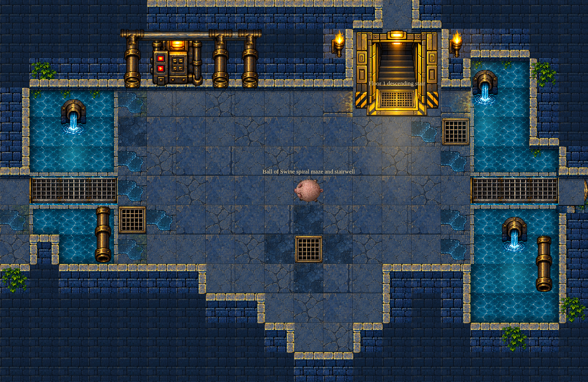

Rejected brightness and uniform-floor revisions are preserved in revisions/; they are revisions within passes 2 and 4, and do not add passes.
Final validation passed: C# tests, full publish with 91 verified assets, normal-clock Floor One combat/victory, fresh arena desktop/mobile and real doorway/bridge keyboard crossings for seeds 1337/42. Verification · Five-pass review